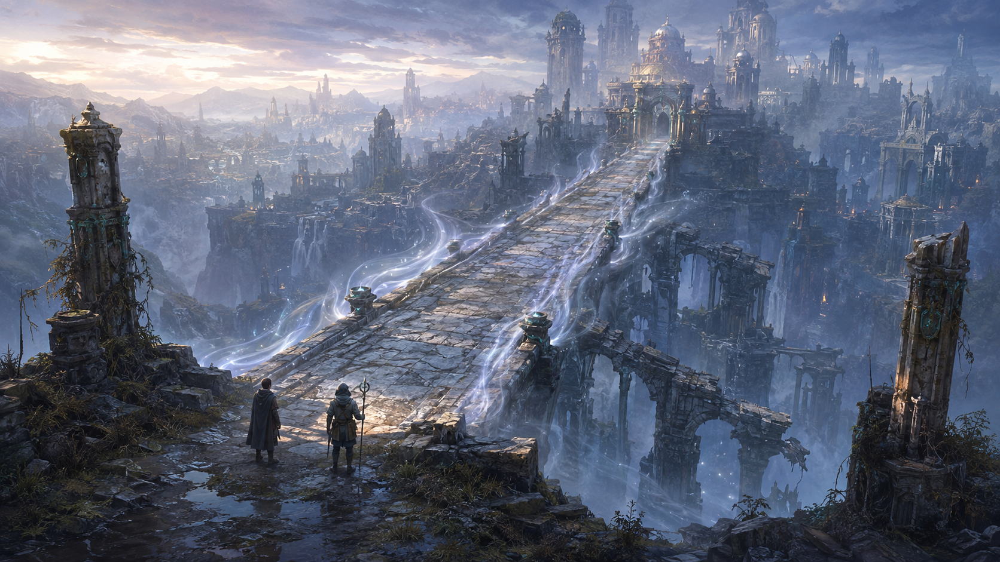

An illustrated D&D adventure · Level 3
The Unmoored City
Beyond the ravine lies a city that sometimes appears whole through silver Mist. Five projects would make it real. The road home is genuine. What the city wants is another matter.
Volume I · For the adventurers
Player Guide →Meet the twelve characters. Explore the premise, the project board, and the rhythm of your return to the city.
Volume II · Behind the screen
Dungeon Master’s Manual →The complete manual, kept behind the DM passphrase. Encounters, secrets, puzzles, and the finale.
An independent fantasy adventure. This site includes material from the System Reference Document 5.2.1 by Wizards of the Coast LLC, licensed under CC BY 4.0. Original generated illustrations are descriptive, not rules or battle maps.